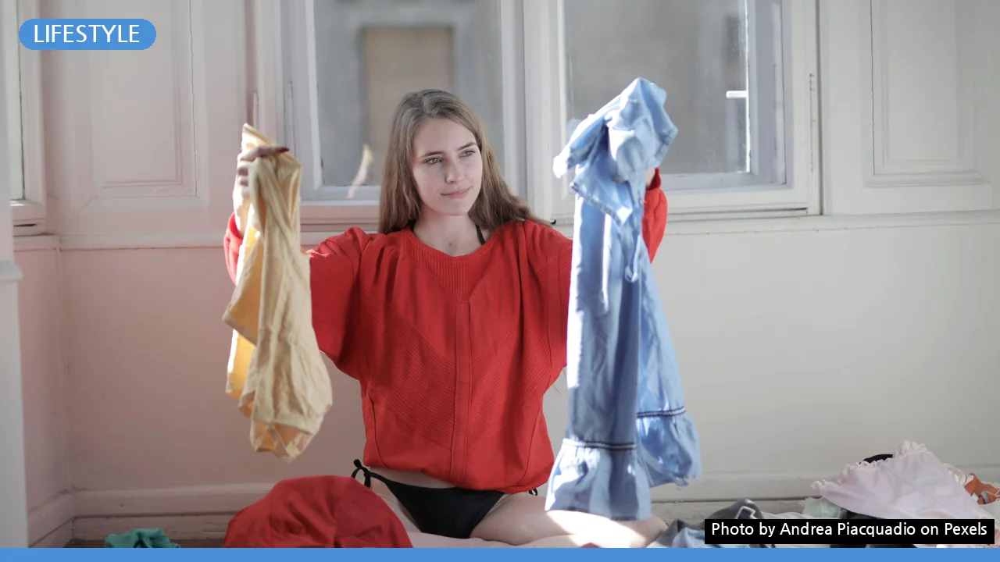
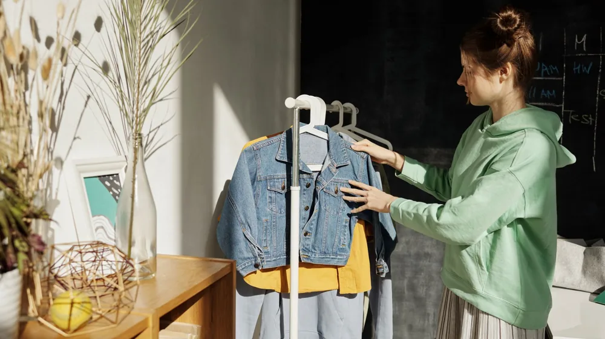

체형별 옷 코디, 단점 커버하고 장점 살리는 완벽 가이드
사진: Andrea Piacquadio / Pexels (무료 이미지, 출처 표기)
나에게 맞는 체형은? 먼저 진단해 보세요

옷을 입을 때마다 어떤 옷이 나에게 어울릴지 고민되시나요? 내 몸의 특징을 이해하는 것이 만족스러운 스타일링의 첫걸음입니다. 자신의 어깨, 허리, 엉덩이 둘레를 대략적으로 측정하여 아래 네 가지 체형 중 어디에 해당하는지 파악해 보세요.
- 배형 (Pear): 어깨보다 엉덩이와 허벅지가 더 발달한 유형입니다. 허리는 비교적 가는 편입니다.
- 사과형 (Apple): 팔다리는 가는 편이지만, 복부와 상체가 상대적으로 통통한 유형입니다.
- 직사각형 (Rectangle): 어깨, 허리, 엉덩이 둘레가 크게 차이 나지 않아 전체적으로 일자 실루엣을 가진 유형입니다.
- 모래시계형 (Hourglass): 어깨와 엉덩이 너비가 비슷하고 허리가 잘록하여 균형 잡힌 실루엣을 가진 유형입니다.
정확한 수치보다는 전체적인 비율과 느낌으로 판단하는 것이 중요합니다. 이제 내 체형에 맞는 코디법을 알아볼까요?
배형 체형 코디: 상체 강조로 균형 잡기
배형은 하체가 발달하여 상하체 불균형으로 고민하는 경우가 많습니다. 상체에 시선을 집중시키고 하체는 길고 슬림하게 연출하는 것이 핵심입니다.
- 추천 아이템
- 상의: 밝은 색상, 화려한 패턴, 러플이나 프릴 장식이 있는 상의로 시선을 위로 유도합니다. 어깨를 살짝 강조하는 퍼프 소매나 보트넥도 좋습니다.
- 하의: 어두운 계열의 무채색 하의를 선택하여 하체를 차분하게 정돈합니다. A라인 스커트, 일자핏 또는 부츠컷 팬츠, 와이드 팬츠 등이 하체 실루엣을 자연스럽게 보완해 줍니다.
- 아우터: 허리선보다 긴 기장의 재킷이나 가디건은 엉덩이를 커버하는 데 효과적입니다.
- 피해야 할 아이템: 하이웨이스트 스키니 진, 밝은 색상의 하의, 옆트임이나 과도한 디테일이 있는 하의는 피하는 것이 좋습니다.
사과형 체형 코디: 시선 분산과 하체 부각
사과형은 가는 팔다리에 비해 복부와 상체에 살집이 있는 체형입니다. 상체 중앙의 시선을 분산시키고 가는 팔다리를 강조하여 전체적인 균형을 맞추는 것이 중요합니다.
- 추천 아이템
- 상의: 브이넥, 유넥 등 목선을 시원하게 드러내는 상의나 어깨 라인이 살짝 드롭된 루즈핏 상의가 좋습니다. 얇은 소재의 롱 카디건이나 재킷을 오픈해서 입으면 상체를 커버할 수 있습니다.
- 하의: 스키니 진, 쇼츠, 미니스커트 등 가는 다리 라인을 드러내는 하의를 적극 활용합니다. 패턴이 있거나 밝은 색상의 하의도 잘 어울립니다.
- 원피스: 허리선이 높게 잡히거나 A라인으로 퍼지는 엠파이어 라인 원피스가 복부를 가려주며 다리를 길어 보이게 합니다.
- 피해야 할 아이템: 허리가 강조되는 크롭 상의, 복부에 디테일이 많은 옷, 두꺼운 니트나 박시한 티셔츠는 피하는 것이 좋습니다.
직사각형 체형 코디: 곡선 실루엣 연출하기
직사각형 체형은 어깨, 허리, 골반의 너비가 비슷하여 자칫 밋밋해 보일 수 있습니다. 허리 라인을 만들어주거나 전체적으로 부드러운 곡선 실루엣을 연출하는 것이 중요합니다.
- 추천 아이템
- 상의: 러플, 프릴, 볼륨 소매 등 디테일이 있는 상의로 상체에 볼륨감을 더합니다. 허리 라인을 살짝 조여주는 페플럼 디자인도 좋습니다.
- 하의: 골반 라인을 강조하는 플레어스커트, 풍성한 A라인 스커트나 와이드 팬츠가 체형에 볼륨을 더해줍니다.
- 아우터: 허리 벨트가 있는 트렌치코트나 재킷으로 허리 라인을 강조하고 곡선미를 더합니다.
- 피해야 할 아이템: 몸에 너무 달라붙는 스트레이트 핏 상하의, 박시한 실루엣의 옷은 피하는 것이 좋습니다.
모래시계형 체형 코디: 균형미와 허리선 강조
모래시계형은 균형 잡힌 어깨와 골반, 잘록한 허리를 가진 체형입니다. 이 체형의 장점을 최대한 살려 허리 라인을 강조하고 몸의 곡선을 드러내는 것이 중요합니다.
- 추천 아이템
- 상의: 몸에 적당히 피트되는 상의, 브이넥이나 라운드넥으로 목선을 시원하게 드러내는 디자인이 좋습니다.
- 하의: 하이웨이스트 스커트나 팬츠로 허리선을 강조하고, 펜슬 스커트, 슬림핏 팬츠 등 몸의 곡선을 따라 흐르는 디자인이 잘 어울립니다.
- 원피스: 허리선이 명확하게 잡힌 랩 원피스나 벨트 디테일이 있는 원피스로 체형의 강점을 부각합니다.
- 피해야 할 아이템: 너무 박시하거나 루즈핏의 옷은 체형의 장점을 가릴 수 있으니 피하는 것이 좋습니다.
체형에 관계없이 실패 없는 코디 팁
특정 체형에 맞는 옷을 고르는 것도 중요하지만, 모든 체형에 공통적으로 적용되는 몇 가지 코디 팁을 기억하면 좋습니다.
- 사이즈는 정 사이즈로: 너무 크거나 작은 옷은 오히려 몸의 단점을 부각할 수 있습니다. 자신의 몸에 잘 맞는 사이즈를 선택하여 깔끔하고 정돈된 느낌을 줍니다.
- 액세서리 활용: 스카프, 목걸이, 벨트 등을 활용하여 시선을 분산하거나 특정 부위를 강조할 수 있습니다. 특히 벨트는 허리 라인을 만드는데 유용합니다.
- 색상과 패턴: 어두운 색상은 수축 효과를, 밝은 색상은 팽창 효과를 줍니다. 강조하고 싶은 부분은 밝게, 커버하고 싶은 부분은 어둡게 매치하는 것이 좋습니다. 세로 스트라이프는 길어 보이는 효과를 줍니다.
- 소재의 선택: 몸에 착 감기는 부드러운 소재는 곡선을 살리고, 힘 있는 소재는 실루엣을 잡아주는 데 유리합니다.
이 가이드가 여러분의 옷 고르기를 더욱 쉽고 즐겁게 만드는 데 도움이 되기를 바랍니다. 자신감을 가지고 나만의 스타일을 찾아보세요.
🔗 이 글도 함께 보면 좋아요: 커피 로스팅 단계별 맛 차이: 내 취향 원두 찾는 완벽 가이드
관련 추천 상품
A라인 스커트, 와이드 팬츠, 랩 원피스, 롱 가디건 관련 인기 상품 보러가기
이 포스팅은 쿠팡 파트너스 활동의 일환으로, 이에 따른 일정액의 수수료를 제공받습니다.